X E5 Administration

Data Management & Academic Profile Ecosystem
Data Management & Academic Profile Ecosystem
Selamat datang di Pusat Administrasi Digital Kelas X E5. Ekosistem ini dirancang secara terpadu untuk mendokumentasikan profil internal, memetakan struktur organisasi kepengurusan, serta mengoptimalkan transparansi informasi guna mewujudkan tata kelola kelas yang modern, efisien, dan kolaboratif.
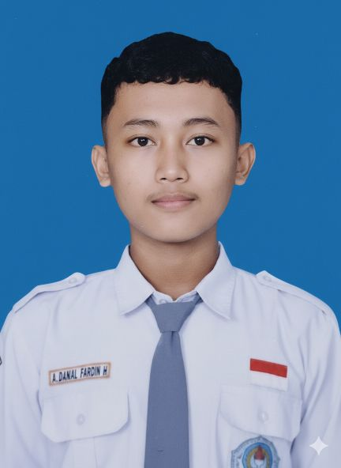
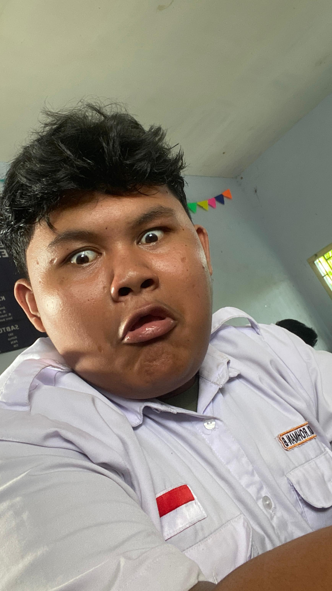
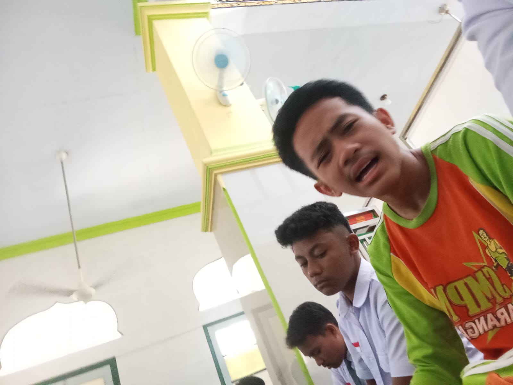
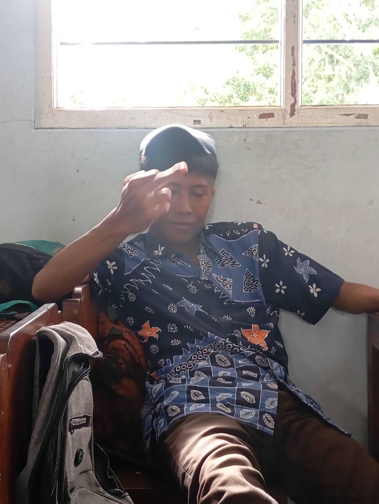
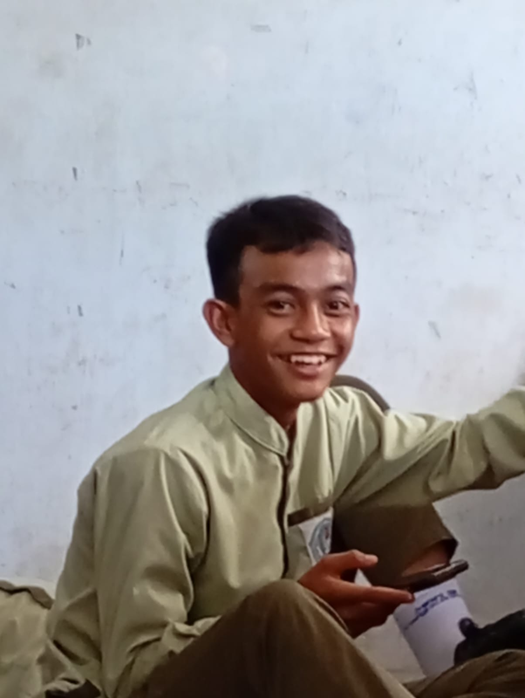
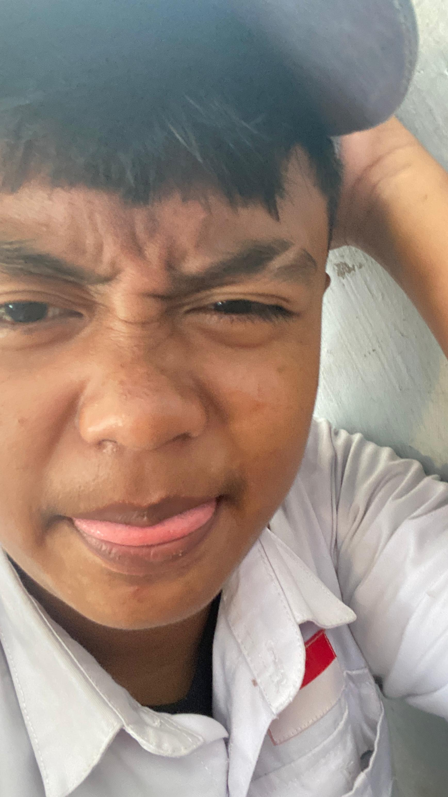
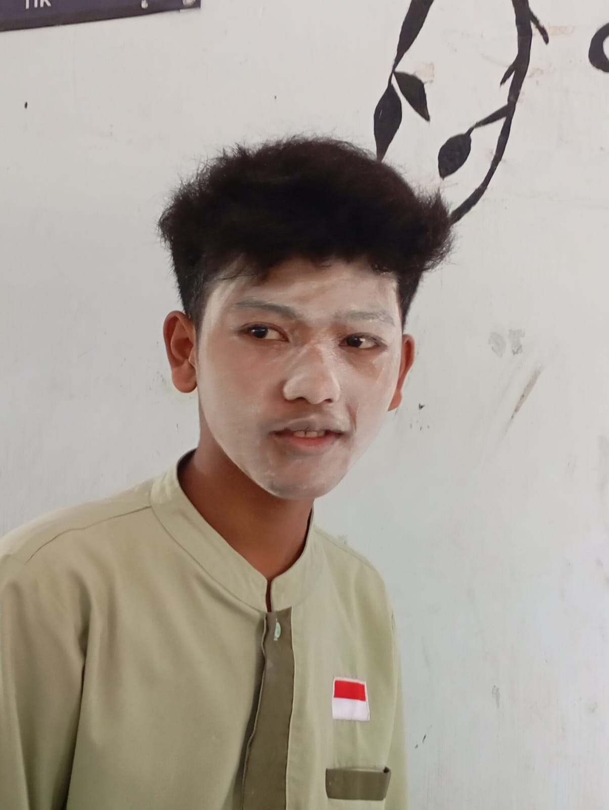
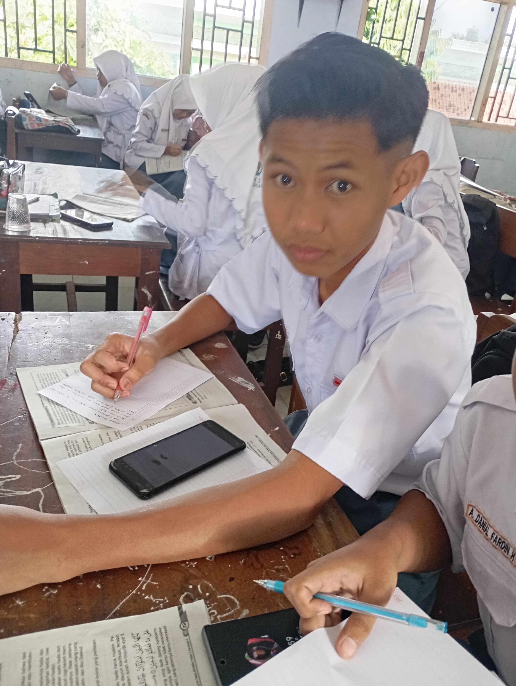
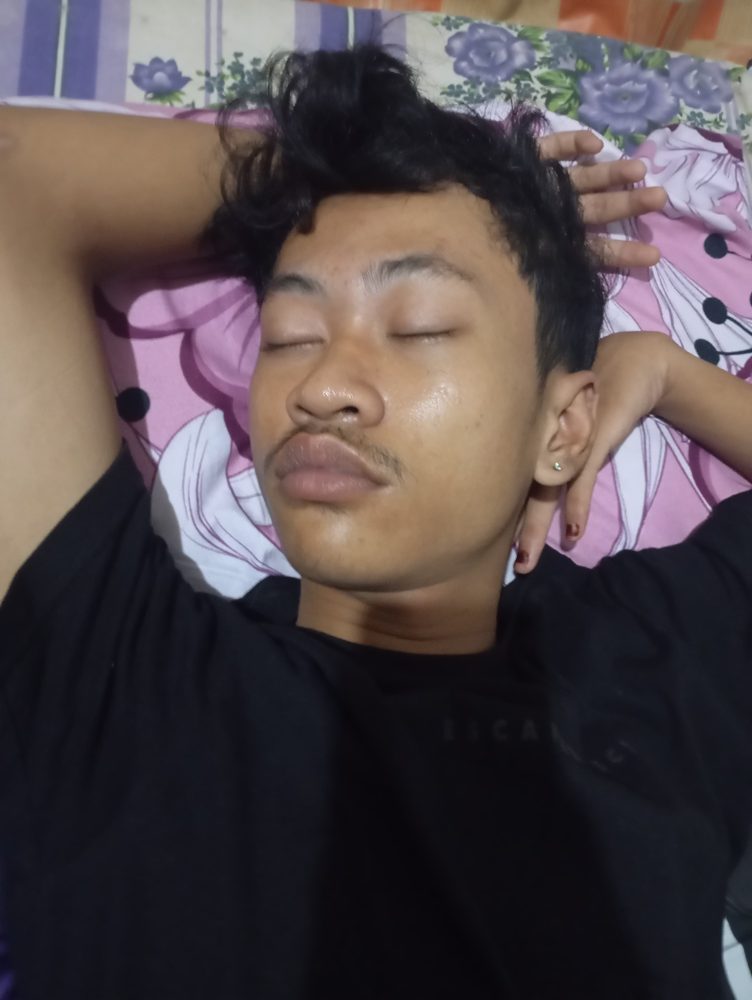
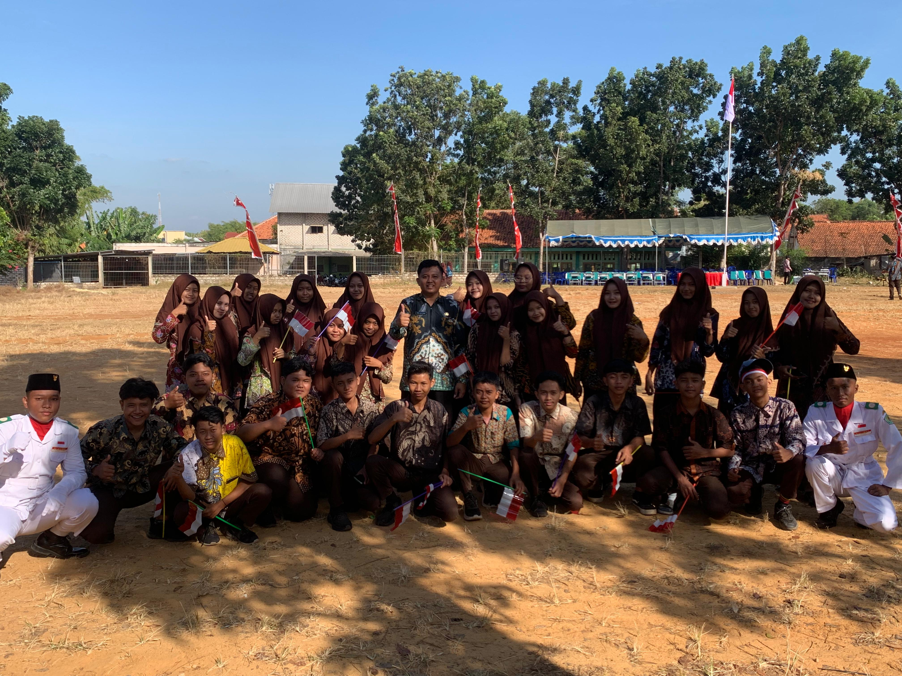
Keseruan saat melakukan keguatan upacara 17 agustusan pada tahun 2025.
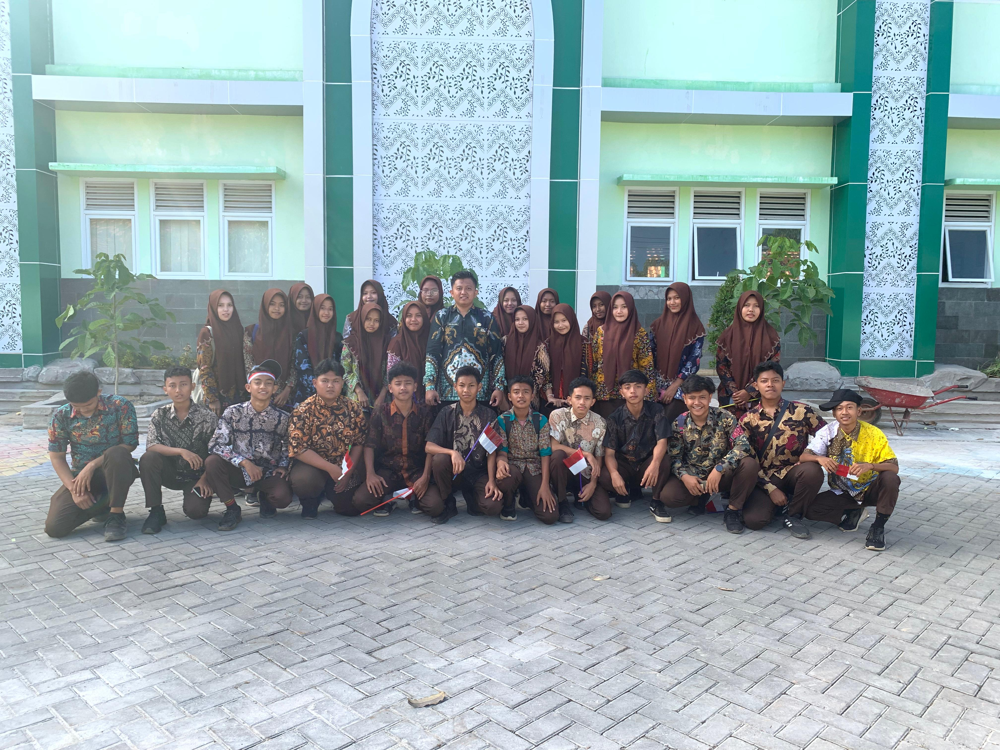
Momen kompak dan penuh semangat saat kegiatan JJS.

Suasana belajar kelompok menjelang kompetisi dan evaluasi semester.

Praktik pemanfaatan perangkat administrasi digital dan spreadsheet.

Eksperimen desain grafis presentasi dan pembuatan aset visual modern.

Diskusi rutin bersama pengurus kelas guna menjaga keterbukaan informasi.
Deskripsi
Nama Lengkap: -
Nama Panggilan: -
Asal Daerah: -
Tanggal Lahir: -
Visi / Motivasi: -